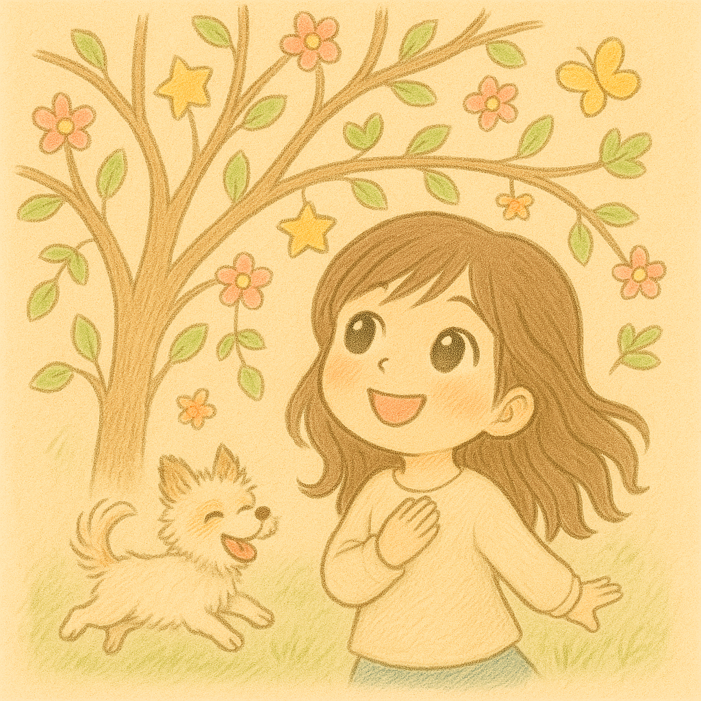

Chào mừng mọi người về Nhà, tớ là Nhà đây.
Bài viết ngắn này như một lời giới thiệu nho nhỏ để mọi người cùng biết về ổ tránh bão xíu xiu này.
Xin chào! Tớ là Nhà
Tên của Nhà được truyền cảm hứng bởi bức tranh mà bất kỳ học sinh cấp Một nào cũng từng vẽ. Tớ đặt như vậy với hy vọng rằng tất cả chúng mình đều sẽ được nhắc nhớ về chút bình yên thuở bé, giữa hành trình làm người lớn lắm thứ ngổn ngang này.
Mọi người vẫn thường gọi tớ là Nhà. Nhưng nếu thích, cậu cũng có thể gọi tớ bằng bút danh là Bách, được lấy cảm hứng từ tên Hán Việt của Hyun – đầy đủ là Bách Chi, mang nghĩa trăm cành, hoặc cành của cây bách. Mọi người hiểu thế nào cũng được.
Các tuyển tập trên kệ
Tính đến hiện tại thì Nhà đã đặt sáu (cộng một) tuyển tập lên kệ, tớ sẽ giới thiệu sơ lược một chút như sau:
1. Trốn nắng hẹn trăng
Tuyển tập văn xuôi đầu tiên của Nhà, viết về Hyun và Hyun cũng là chàng thơ duy nhất.
2. Thẩn thẩn thơ thơ
Tuyển tập thơ của Nhà, vẫn chỉ viết về Hyun và chỉ Hyun.
3. Người kể chuyện nhà
Tuyển tập được đặt kệ để chiều thói thích sưu tầm đó đây của chủ nhà.
4. Hyun đã ở đây
Tuyển tập viết về Hyun và thị trấn mà anh sống ở một vũ trụ song song nào đó.
5. Để em khóc lần nữa khi mùa đông đến
Tuyển tập về những bài hát mà tớ rất yêu.
6. Chuyện để dành
Tuyển tập mang tính cá nhân cao – tớ viết vì tớ, vì người tớ yêu thương và cả những ai đọc chữ tớ viết.
7. Nằm nghe Hyun nói
Tuyển tập những lời dặn dò hay tâm sự be bé của anh Hyun.
Tớ vẫn là đứa trẻ đang học viết và học lớn. Nhà không chỉ là nơi để viết về Hyun mà còn viết về bản thân tớ. Đối với riêng tớ, mỗi người cầm bút đều mang trong mình một sứ mệnh. Mỗi khi viết, tớ không chỉ đơn giản là viết nữa, mà tớ đã cắt nửa đời mình vào trang giấy, một nửa hồn tớ đã được đẽo gọt bằng mực đen và không ngừng kiếm tìm nửa mảnh hồn tự do còn lại đâu đó ngoài kia để ghép đôi.
Cuối cùng, từ tận đáy lòng, tớ luôn hy vọng Nhà sẽ là một chiếc ổ
nhỏ tránh bão phòng khi mọi người đi đâu xa nhưng chưa có chỗ
trú.
Cảm ơn vì đã đọc đến đây và ghé thăm Nhà. Mong rằng cậu sẽ
tìm thấy một chút bình yên ở đây. ヽ(*´∀｀)